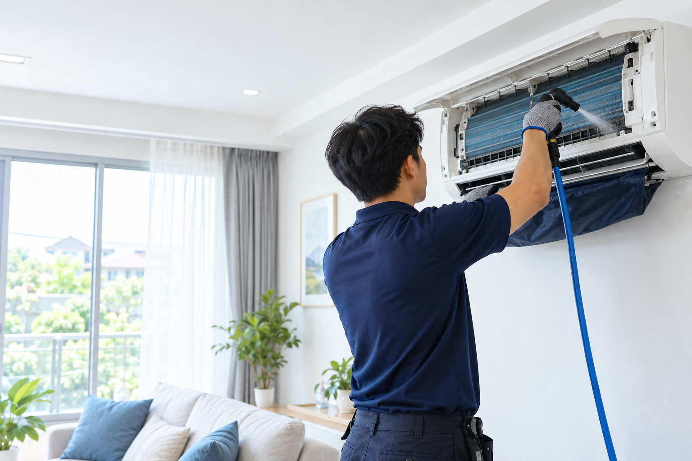

ฟังอาการก่อนจับเครื่องมือ
ทุกงานเริ่มจากการถามอาการและดูบริบทของพื้นที่ เพื่อไม่เสนอวิธีที่เกินความจำเป็น

Celar Air เปิดบริษัทอย่างเป็นทางการมาแล้วประมาณ 1 ปี จากประสบการณ์ของทีมช่างที่ทำงานด้านเครื่องปรับอากาศมากกว่า 10 ปี เราจึงเข้าใจทั้งปัญหาหน้างาน ความกังวลของเจ้าของบ้าน และรายละเอียดเล็ก ๆ ที่ทำให้แอร์กลับมาเย็นสบายได้นาน
เราเริ่มจากการดูแลบ้านของคนใกล้ตัว แล้วค่อย ๆ เติบโตด้วยคำบอกต่อ ทุกงานจึงมีการอธิบายก่อนเริ่ม ทำงานเป็นขั้นตอน และส่งมอบด้วยความรับผิดชอบ
เราอยากให้ลูกค้าเห็นภาพงานจริงและรู้สึกสบายใจก่อนตัดสินใจ
ทุกงานเริ่มจากการถามอาการและดูบริบทของพื้นที่ เพื่อไม่เสนอวิธีที่เกินความจำเป็น
ทีมช่างใช้ประสบการณ์กว่า 10 ปีตรวจจุดสำคัญ ตั้งแต่ฝาครอบจนถึงน้ำทิ้ง
หลังงานมีคำแนะนำการใช้งานและรอบล้างที่เหมาะกับห้อง ไม่ทิ้งลูกค้าไว้หลังชำระเงิน
นี่คือมาตรฐานที่เราตั้งใจรักษาในทุกบ้าน ทุกคอนโด และทุกสำนักงานที่เราได้เข้าไปดูแล
รู้จักทีมช่างมากขึ้น →